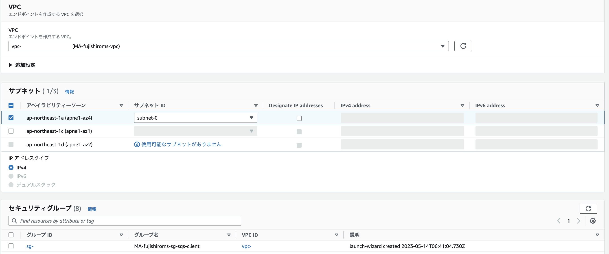
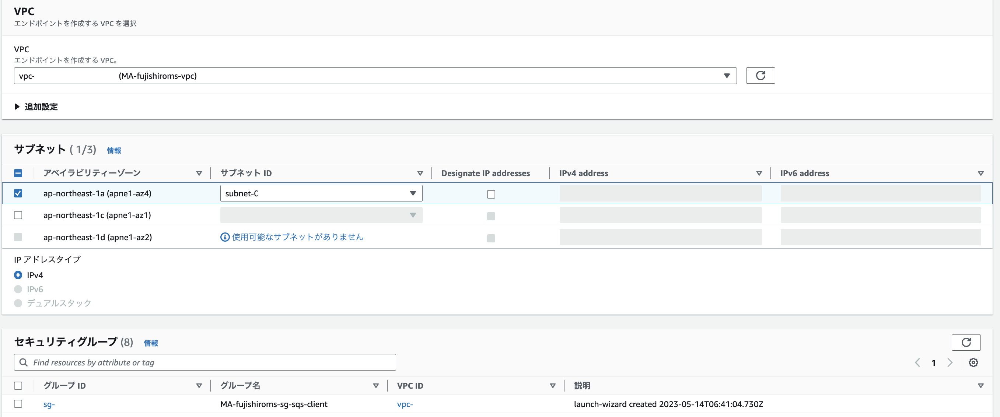
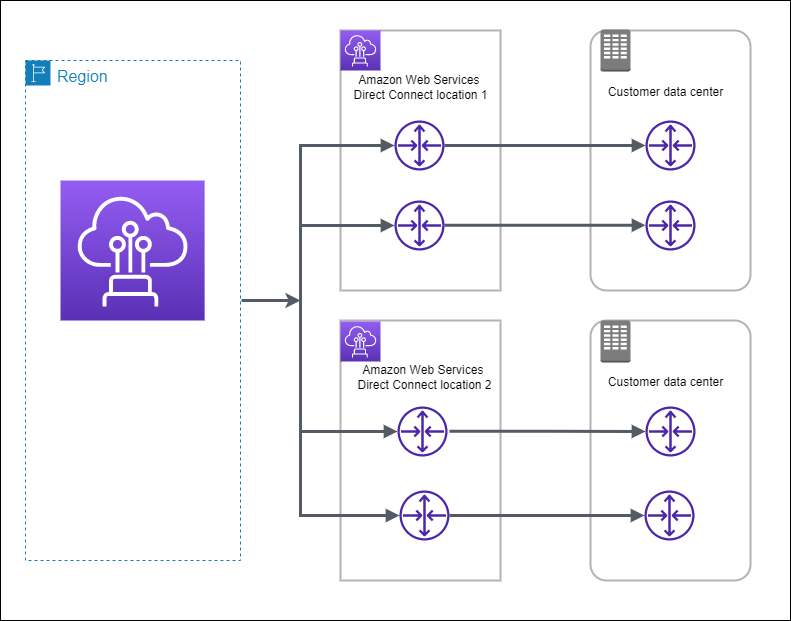
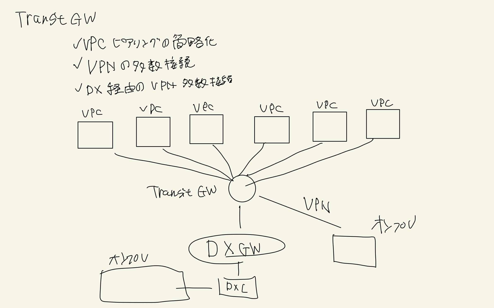
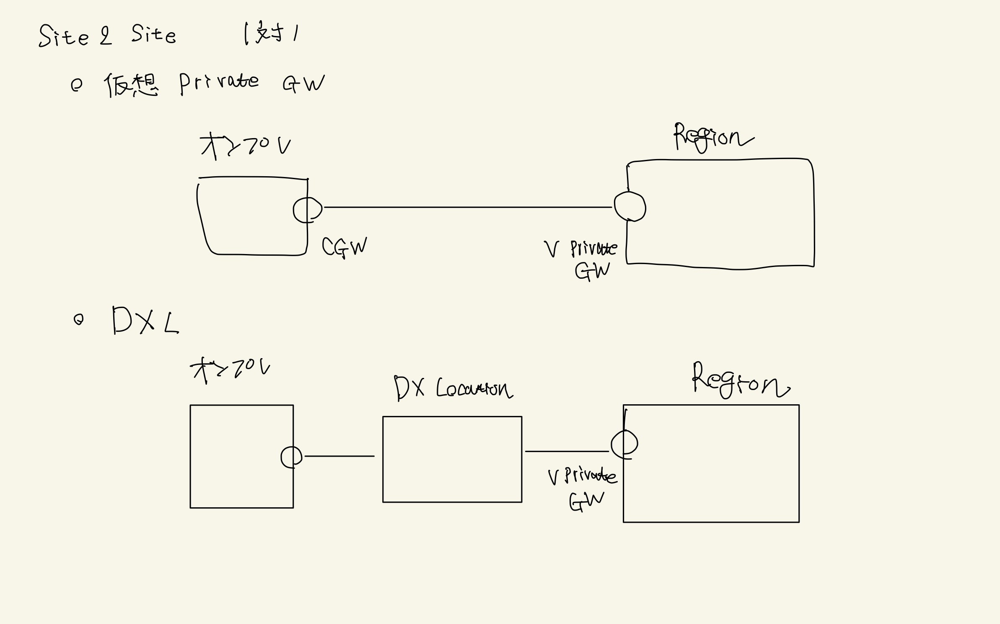
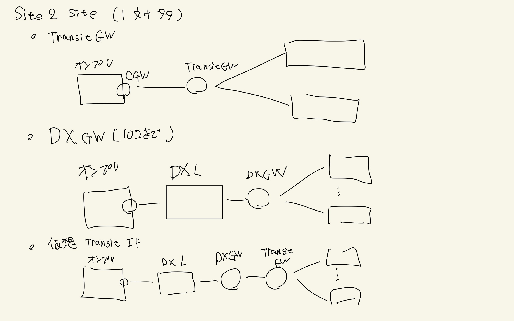
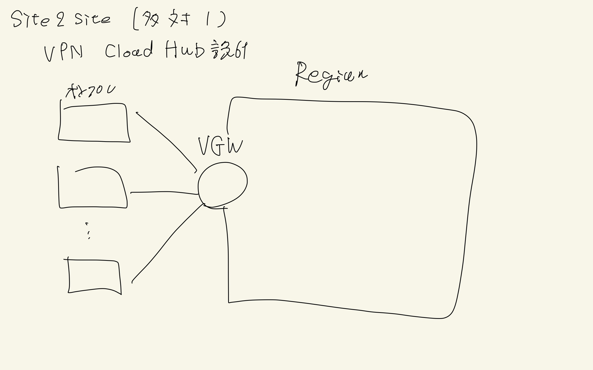

ネットワーク設計¶
VPCエンドポイントや、VPN接続などが問われることが多いので、以下を確認しておくと良い
VPCエンドポイント¶
AWSのサービス（パブリックネットワークに存在）に対してアクセスする際、インターネットを経由せずにAWS内部の通信で接続するために利用されるのがVPCエンドポイントである。
VPCエンドポイントにはゲートウェイ型とインターフェース型が存在する
ゲートウェイ型¶
S3とDynamo DBが対応しており、料金がかからない特徴がある。
ゲートウェイであるので、インターネットGWなどと同様、ルーティング設定された条件を満たすとVPCエンドポイントを経由して、リソースにアクセスする。
作成としては以下の手順を踏む
VPCサービスのエンドポイント機能を選択
com.amazonaws.ap-northeast-1.s3のGWを選択
設定するVPCを選択
設定する
ルートテーブルを選択バケットポリシー側で設定したVPC-Endpointからのアクセスを許可する

インターフェース型(PrivateLink型)¶
50種類以上のサービスが対応しており、S3はインターフェース型の接続も可能。
データの転送とサービス利用時間に応じて課金する必要がある。
AWSのインターフェースエンドポイントは、VPC内の特定のサブネットにElastic Network Interface (ENI) を提供することで、プライベートな接続を介してAWSサービスにアクセスするためのエンドポイントを作成します。このENIはVPC内のプライベートIPアドレスを持ち、このENIを経由してAWSサービスに接続します。この技術全体がAWS PrivateLinkと呼ばれています。
要するに、VPC内にプライベートIPアドレスを持つエンドポイントインターフェース（ENI）が提供され、このENIを通じてAWSのリソースにアクセスするのは、インターフェース型のVPCエンドポイントの特徴です。

作成としては以下の手順を踏む
VPCサービスのエンドポイント機能を選択
com.amazonaws.ap-northeast-1.s3のInterfaceを選択
設定するVPCを選択
設定する
サブネットを選択適用する
セキュリティグループを選択バケットポリシー側で設定したVPC-Endpointからのアクセスを許可する
 

サードパーティサービスの提供¶
自作のサービス（サードパーティサービス）を他のVPCやオンプレに対してプライベートに利用してほしい場合はNLBを経由して、インターフェース型のVPCエンドポイントを払い出すことができる。

ゲートウェイ型とインターフェース型の違い¶
ゲートウェイ型のEndpointのIPは、内部IPではなく外部IPであるという点が特徴的である。
すなわちAWS内部からAWS内部への通信であるものの、VPC内→エンドポイントへの通信は外部のIPへのアクセスに見える。
一方で、インターフェース型はENIがVPCの内部にサービスが立ち上がっているように見えるので、VPC内部→VPC内部の通信で完結する。
この辺りは2つのVPCエンドポイントの違いを知るが参考になる。
さらに、VPC外からの接続について差分がある。
GW型では通信を設定し合ったVPCのみで通信が可能であり、そのVPCと接続している他の環境（オンプレや別のVPC）から Endpointを経由することはできない。
一方で、インターフェース型は、VPC外からもVPC自体への接続を確保してしまえば、 Endpointを経由して対象サービスにアクセスすることができる。
外部からVPCへの接続¶
AWS外部からVPCへの接続を行う方法について、大きく3パターン
AWS クライアントVPN: クライアントとの接続設定
AWS Site-to-Site VPN: データセンタやオフィスとの接続設定
Direct Connect: 物理線を引いての接続設定
AWS クライアントVPN¶
VPCの外部のクライアントから、VPCに接続する技術。 データセンターなどではなく、単独のクライアントなどと接続する際に利用する。
設定方法¶
クライアントが利用するCIDRを設定
認証タイプを設定
サブネットにVPNを関連づける
VPNのENIが発行される
VPNを経由して、別のAWSリソースにアクセスする際はこのENIのIPが利用される認証設定
デフォルトでは、VPNない全てのリソースにアクセス権限を持っていないので、明示的にアクセス先を許可する
クライアント用のVPN Endpoint設定をDLする
作成されたエンドポイント情報をDLして、クライアント側でVPNの設定を行う
認証タイプ¶
AWSクライアントがVPNに接続する際の認証は以下の3パターンが準備されている
Active Directory認証(ユーザーベース)
シングルサインオン：SAMLベースのフェデレーション(ユーザーベース)
相互認証（証明書ベース）
AWS Site-to-Site VPN¶
VPCに仮想プライベートゲートウェイをアタッチして、データセンターなどのオンプレのルーターと、IPsec VPN接続を可能にする。 自動的に2つの接続が設定され、高可用性が担保される。
Cloud Hub設計¶
複数のオンプレミスが1つのVPCに接続するような設計をCloudHub設計と呼ぶ
仮想プライベートGW¶
VPCエンドポイント側に設定するGW
設定方法¶
VPCの画面から仮想プライベートGWを選択
名前とASNの設定
対象のVPCにアタッチ
ルートテーブルに対して、仮想プライベートGWへのルーティングを設定
カスタマーGW¶
カスタマーのルーター側で設定するGW
設定方法¶
VPCの画面からカスタマーGWを選択
名前、ルーティングタイプ、ASN、ルーターのIPを設定
VPN接続の確立¶
設定方法¶
VPCの画面からSite-to-site VPN接続を選択
仮想プライベートGWとカスタマーGWを選択
ルーター側に導入するconfigファイルをDLして、ルーターに導入する
接続時の機能¶
Internet Key Exchange
暗号化のために共通鍵を交換することができるデッドピア検出
接続先のデバイスが有効か否かを確認できるNATトラバーサル
オンプレ側でNATルーターを介したVPNが可能
Direct Connect¶
ユーザーのルーター（Customer Router）からDirect Connectのルータ（DX Router）に光ファイバーケーブルを介して接続するサービス。インターネットを経由しない専用線を確保できる。
通信速度に関しても最大100GBpsを確保することができるので、金額と設定の手間がかかる分、安全性と通信速度を確保できる。
下図のようにAWSのDirectConnectロケーションを経由してオンプレミス環境やDBとAWS内の通信を確立する。
 公式ドキュメント
公式ドキュメント
接続方法などは参考サイト参照。
接続方法¶
専用接続とホスト接続がある
専用接続¶
単一アカウントに専用の物理線を引きます。主要なデータセンターなどを経由して線を引くことになる。 1G以上の(1Gbps/10Gbps/100Gbps)帯域幅を確約できる。
ホスト接続¶
AWS Direct Partner(NTT東日本など）を利用して提供されるため、複数のお客さんと共有をする。 そのため、帯域幅もMbps(50Mbps-500Mbps)という比較的小さいサイズで契約することができる。
冗長性¶
VPNバックアップ¶
AWS Direct ConnectとVPNを併用して、VPNをバックアップにすることができる。 VPNは1.25Gbpsまでをサポートしているので1Gを超える場合は、別のバックアップを検討する必要がある。
高い回復性¶
Direct Connect Location自体は冗長構成をとるが、Direct Connect Locationの内部は冗長構成にしない。
つまり、ロケーションに障害が発生すると、別のロケーション経由の通信を行うが、障害が発生したロケーション自体は利用できない。

最大回復性¶
高い回復性に加えて、ロケーション内の冗長構成もとる 
仮想インターフェース¶
Direct Connectでは、仮想インターフェース（VIF)を利用して通信を行う
プライベート仮想インターフェース（プライベートVIF）¶
DirectConnectを経由してVPCに接続する際に利用される。
パブリック仮想インターフェース（パブリックVIF）¶
DirectConnectを経由してパブリックなAWSサービス（S3やDynamoDB）に対して接続することができる。
トランジット仮想インターフェース（トランジットVIF）¶
DirectConnectを経由してTransitGWに対してアクセスすることができる。
VPC同士の接続¶
VPCが他のVPCと接続するための設定。
一対一の場合は、VPCピア接続が容易。一対多の場合はTransit GWを利用すると管理が容易になる。
VPCピア接続¶
異なるリージョンであっても、設置を行うことでVPC-AとVPC-Bで通信を可能にする。 ただし、VPC-AとVPC-BがVPCピア接続していても、VPC-Bとピア接続しているVPC-CからVPC-Aへの接続はできない。
設定方法¶
参考サイトがわかりやすいので確認すると良い。
リクエスタ(接続元)側でピア接続設定を行う
接続元のVPC ID
接続先のアカウント情報（同じアカウントか否か）
接続先のリージョン（同一リージョンか否か）
接続先のVPC ID
アクセプタ(接続先)側で承認する
ピア接続設定を確認すると承認待ちになっているので承認をする
リクエスタとアクセプタ両方でルートテーブルの設定を行う
CIDRの設定を行う
ターゲットにピアリング接続を行う
Transit Gateway¶
最大で5000のVPC同士の接続やVPCとオンプレとの接続を管理することができる。 Site-to-Site VPN接続やVPCピア接続について個別設定せずに、Transit GWで集中管理できる。

VPCピア接続の取りまとめ¶
VPCピア接続を利用して複数のVPC同士を接続すると以下のような課題がある
トランジットトラフィックに対応できない
VPCを跨いだ通信はできない
すなわち、すべてのVPC同士の設定が必要
VPCを追加すると、全てに修正が入る
Transit GWを利用することで、トランジットトラフィックに対応でき、追加時もTransitGWを修正するだけで良い

VPN接続の取りまとめ¶
VPN接続を利用して複数のVPCに接続しようとすると、それぞれのVPCに対してVPNの設定が必要。 しかし、TransitGWを利用すれば、オンプレとTransit GWまでの設定をするだけで、後ろのVPCの追加が容易になる。 DirectConnect GWを利用することで専用線経由のVPNにも対応できる
VPNまとめ¶
オンプレ 1:VPC 1
クライアントVPN
クライアントVPNエンドポイント
サイト:Site2Site VPN
仮想プライベートGW
専用線:DX
DX Location
オンプレ N:VPC 1
Cloud Hub
オンプレ 1:VPC N
一般回線: TransitGW
専用線(N<10): DXGW(DirectConnect GW)
専用線(N>10): DXGW+TransitGW
  
Route53¶
HosteZone¶
パブリックホストゾーンとプライベートホストゾーンがある。
パブリック：インターネット上に公開されたDNSドメインを管理
プライベート：VPC内のドメインのレコードを管理
Resolver¶
VPC内やオンプレからの問い合わせを解決するサービスでこちらの記事がわかりやすい
VPC内の名前解決¶
通信を行う際に、Resolverに問い合わせを行い、Resolverはhosted zoneに問い合わせを行い解決する。
オンプレからの名前解決¶
オンプレミス環境からクラウド環境に名前解決のリクエストをする際には、Route53 Resolverのインバウンドエンドポイントの設定が必要になる。インバウンドのエンドポイントが作成されると、IPが発行されるので、このIPをオンプレ側のDNSに設定する。
オンプレへの名前解決¶
クラウド側からオンプレミスのDNSで名前解決をリクエストする際には、Route53 アウトバウンドエンドポイントとRoute53 ResolverRuleを設定する必要がある。
このResolver Ruleは共有が可能で、別のAWSアカウントなどで共通利用することができる。